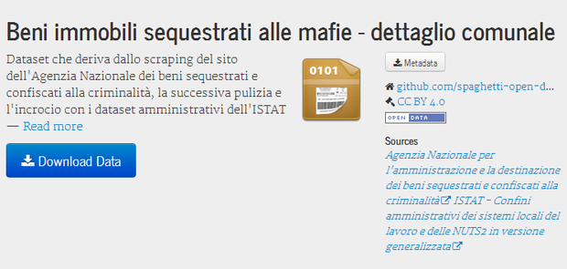
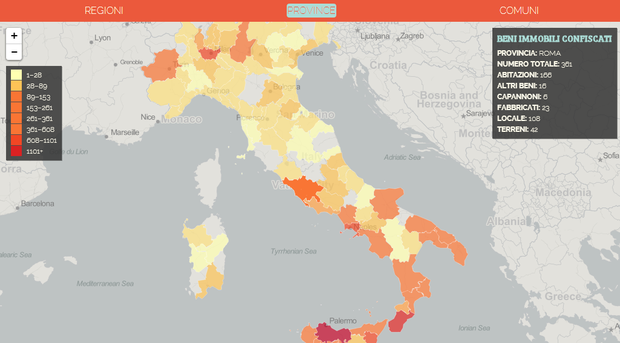
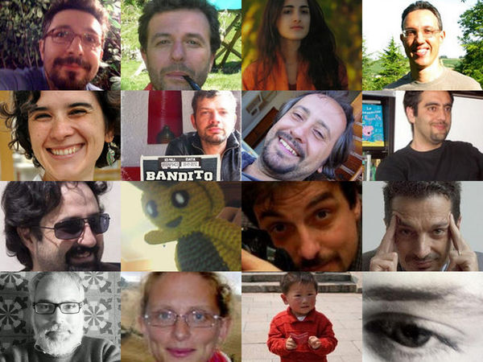

Alcuni mesi fa mi sono iscritto alla long list di “esperti di dati aperti e economia hacker” di OpenPompei e sono stato selezionato per partecipare ad un bellissimo week-end di monitoraggio civico su due beni confiscati alle mafie: l’appartamento sede di Radio Siani e l’incredibile Castello Mediceo (qui, qui e qui maggiori dettagli).
Vivo da sempre in Sicilia, terra distrutta dalla criminalità organizzata, ma mai ero entrato in contatto così diretto con essa. Entrare in casa di Raffaele Cutolo e sopratutto ascoltare la voce (alle volte) tremante di chi ha avuto “ieri” amici uccisi dalla Camorra e oggi si occupa di dare vita nuova a questi beni immobili, è stata un’esperienza umana e professionale importante.
Sono stato chiamato per il mio lavoro da civic hacker, per dare un contributo sulla scelta di modalità e strumenti che riuscissero a sfruttare al meglio l’energia potenziale dei dati aperti come mezzo di lotta alla criminalità e di valorizzazione del territorio.
Lo scorso settembre ho candidato Palermo ad ospitare il raduno 2014 di Spaghetti Open Data, una grande e variegata comunità di “Italiane e italiani che fanno cose con i dati”. L’esito è stato negativo, ma il legame tra la mia terra e #SOD14 ha trovato comunque modo di svilupparsi, proprio a partire dal lavoro fatto per OpenPompei: ho guidato un hackathon dal titolo “Gli OpenData per liberare l’Energia Potenziale dei beni confiscati alle mafie”.
“Confiscati Bene” è proprio il nome geniale con cui Massimo Santi ha battezzato il prodotto di questa maratona, iniziata a Bologna il 29 marzo e che ancora non è arrivata al suo traguardo.
L’obiettivo dell’hackathon era quello di mettere in luce come informazioni semplici, dirette e ricche sui beni confiscati alle mafie permettano alle imprese sane e alla società civile di costruire su di essi progetti di impresa sostenibile e di creazione di valore sociale. E farlo proprio andando a cercare queste informazioni, pulendole, rimodellandole e rimettendole a disposizione.
Il tema dei beni confiscati ed in particolare quello dell'”Agenzia nazionale per l’amministrazione e la destinazione dei beni sequestrati e confiscati alla criminalità organizzata” (ANBSC) è un tema attualmente caldo e proprio in queste settimane sembra che l’ANBSC stia finalmente uscendo da un momento che sembra di stasi.
L’unico sito pubblico in cui sono disponibili dati nazionali sui beni sequestrati alle mafie è quello dell’ANBSC. Molte associazioni – come non citare Libera – già raccolgono e pubblicano questo tipo di dati in modalità anche molto ricche, ma soltanto sul sito dell’Agenzia ci sono dati di tutto il nostro paese. Il problema è che sono disponibili in modalità o troppo aggregate (vedi ” dati statistiche“) o al contrario suddivise in migliaia di pagine web, da cui bisognerebbe fare migliaia di di “copia e incolla” per riuscire a creare un dataset organico e completo. Siamo partiti proprio da qui, dal web scraping di queste pagine, dall’estrazione automatica di dati strutturati da queste pagine.
I dati sono stati quindi “puliti” (ad esempio inserire gli accenti omessi nei toponimi, come in ” Cefalu “), arrichiti (come aggiungere i codici ISTAT dei Comuni) e pubblicati. Da qui potrete accedere a un file CSV con tutte le informazioni presenti sul sito dell’ANBSC sui beni immobili sequestrati alle mafie in tutto il territorio nazionale. Abbiamo ritenuto utile pubblicare i dati utilizzando le specifiche del ” Tabular Data Package“, in modo che fossero completi anche in termini di metainformazioni.

Il dataset sui beni, oltre ad essere accessibile in download, è consultabile tramite un’interfaccia a faccette (dei filtri rapidi di visualizzazione) che consentono di sfogliare dinamicamente gli oltre 11.000 record di dati e di averne al contempo una rapida sintesi numerica di insieme. Con un paio di click è possibile scoprire che i beni di Afragola già consegnati sono 33 – 27 terreni, 5 abitazioni, 1 fabbricato – e che 5 di questi sono assegnati ai Carabinieri. Per vedere la cosa in azione basta aprire l’URL del progetto:
http://spaghetti-open-data.github.io/beni-confiscati-aperti/
Un’altra modalità di visualizzazione dei dati grezzi è quella cartografica. Sono state create delle coroplete interattive in cui in scala di colore variabile è rappresentato il numerno di beni immobili totali per Regione, Provincia e Comune.

A partire dagli stessi dati è stata realizzata anche un mappa a cluster di punti, filtrabile per tipo di bene e con colori che identificano la tipologia di bene confiscato.
La pulizia e l’arrichimento del dataset sono stati propedeutici alla correlazione delle informazioni sui beni con quelle di altri dataset. Lo abbiamo fatto proprio per provare a misurare l‘Energia potenziale dei beni confiscati, “un indicatore dell’impatto economico che quel bene potrebbe avere se venisse riassegnato”.
Abbiamo quindi preso in considerazione i soli beni in gestione e quindi non ancora assegnati e li abbiamo messi in relazione con gli addetti del settore non-profit (dati dal 9° Censimento generale dell’industria e dei servizi e Censimento delle istituzioni non profit dell’ISTAT ) secondo questa formula:
EPbc = N * Y_np
Dove N è il numero dei beni confiscati non assegnati e Y_np l’occupazione nel settore non profit nel stesso territorio.
Questa energia è stata rappresentate in una mappa coropleta per Provincia e una per Comune.
Abbiamo lavorato in gruppo ed abbiamo scelto GitHub come repository di scrittura condivisa del codice, come spazio di hosting di questa prima release di Confiscati Bene e per documentare il lavoro fatto.
Nel wiki è infatti possibile trovare la documentazione sempre in progress del progetto; ci troverete infatti anche riferimenti a cose che non ho citato come l’accesso REST ai dati sui beni.
Tutto questo è stato fatto in squadra, grazie ai contributi dei pericolosi civic hacker sottostanti. Il confronto con persone di età, provenienza e cultura molto differenti è stato molto interessante e anche una forza trainante progetto.

Ma il bello deve ancora venire. Vogliamo essere di stimolo con l’Agenzia in modo che possa pubblicare presto dati completi, primari, tempestivi e riutilizzabili e sopratutto collaborare con quelle associazioni che da anni presidiano questa tema di importanza strategica per la crescita del paese Italia, e costruire qualcosa che aiuti a liberare meglio la grande energia potenziale dei beni confiscati alle mafie.